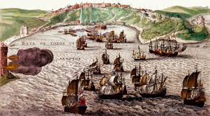

Bem-vindo ao portal Brasil Colônia!
Aqui você encontrará uma visão clara e dinâmica sobre um dos períodos mais marcantes da história do nosso país. Explore acontecimentos importantes, personagens que influenciaram a sociedade colonial e movimentos que moldaram a cultura, a economia e a formação social do Brasil.
O Brasil Colônia foi o período da história brasileira de 1500 a 1822, em que Portugal governou e explorou o território. Foi marcado por ciclos econômicos como o do pau-brasil, açúcar e ouro, pelo uso da mão de obra escravizada e pela estrutura de plantation.
Acontecimentos em destaque

Invasões Holandesas
Entenda a ocupação holandesa no Nordeste e seus impactos econômicos, culturais e militares.